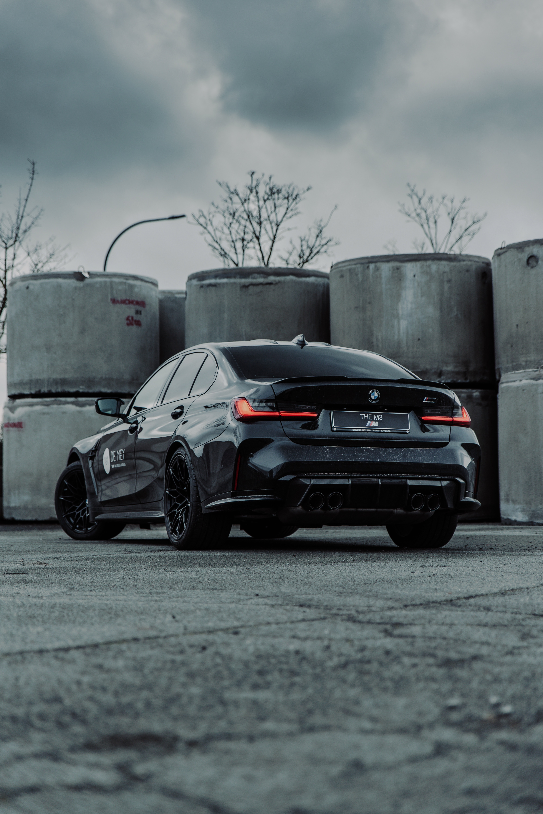
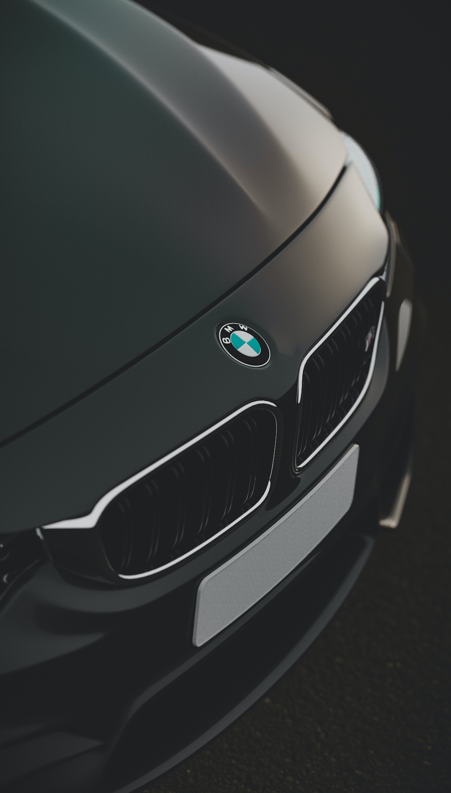
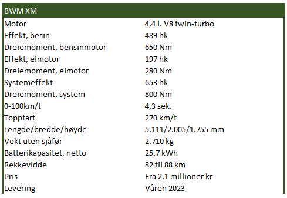

ja, det er eksosrør du ser: BMW XM er ikke elektrisk. Dette er en
ladbar hybrid opp mot 88 kilometers rekkevidde.
foto: bmw

ikke med leiebilspesifikasjoner: Under panseret på nye BMW XM
vil det ikke dukke opp fornuftige dieselmotorer. XM er den første originale
M-bilen siden M1 ble lansert for 50 år siden.
foto: bmw

pynt i taket: Taktrekket er spesielt. Ifølge
BMW, fordi det er prismeformet og kommer
med 100 LED-pærer som skal lyse opp.
foto: bmw
håkon sæbø
hakon.sabo@finansavisen.no
konjukturnedgang og sur økonomi
kan bare bety en ting: BMW
skal lansere en ny og ekstremt
kostbar bil. Dette skjedde på begynnelsen
av 90-tallet, da BMW 8-serie dukket
opp med V12 og dekadente vippelykter,
akkurat i tide til å gå glipp av jappetid og
overforbruk.
I 2008 forsøkte BMW seg på nytt. Med
finanskrise på trappene var timingen dårlig
for BMW X6, en unødvendig stor kupé-
SUV med V8. Nå er tyskerne i gang igjen.
farlige konkurrenter
Mens det snakkes om finanskrise og usikkerhet,
slipper BMW nå SUV-bomben
XM. At de stjeler modellnavnet til stakkars
Citroën bryr nok ikke BMW seg om,
for tyske XM handler om spisse albuer og
å breie seg ut.
«BMW er ikke fremmed for å våge å
provosere. Selskapets historie er full av eksempler
som viser at selskapet går sine egne
veier med enkelte modeller. Helt nye BMW
XM er et tydelig eksempel på nettopp det»,
står det ærlig nok i pressemeldingen.
BMW XM er et beist i ordets rette forstand.
Den måler 5,1 meter og er rett over
to meter bred. En 4,4 liters twin-turbo V8
yter 489 hestekrefter mens den elektriske
motoren står for 197 hestekrefter. Samlet
systemeffekt er på 653 hestekrefter, noe
som delvis setter BMW XM i konkurranse
med Lamborghini Urus, Aston Martin
DBX707 og Bentley Bentayga Speed.
BMW skryter av at XM er selskapets
første egenproduserte M-bil siden
den lave sportsbilen BMW M1 kom på
70-tallet.
Det tyskerne mener er at XM ikke fås
med små motorer og leiebilspesifikasjoner
til lavere pris. I Norge starter XM på
rundt 2,1 millioner kroner med dagens
avgiftsnivåer, men bilen skal ikke leveres
før til våren, som betyr at den skal bli en
del dyrere.
enda heftigere versjon på vei
653 hestekrefter og 800 Nm lover bra,
men med 0 til 100 på 4,3 sekunder er
BMWs krafttak et stykke unna Aston
Martin DBX707 med sine 3,3 sekunder.
Dette har BMW åpenbart reflektert over,
for det meldes i tillegg om at det kommer
en enda heftigere versjon.
BMW XM «Label red», som kommer
til høsten neste år, skal yte hele 748 hestkrefter
og har 1.000 Nm. Denne vil også
få et fremdriftsbatteri på 25,7 kWh, slik
«vanlig» XM kommer med. Om du nå
sitter og tenker at dette må bli en ubegripelig
tung bil, så har du rett. BMW XM
veier godt over 2,7 tonn!
BMW har ved flere anledninger demonstrert
at de har god kontroll på sine
ladbare hybrider. Slik sett blir det spennende
å se hvordan selskapets første ladbare
hybrid fra M-avdelingen blir å kjøre.
XM beklager seg forøvrig ikke på luftfjæring,
men kommer med alle de andre
understellsgodsakene som standard. Det
innebærer at adaptive dempere, bakhjul
som svinger og et 48V-system med adaptive
krengningsstabilisatorer fås med på
kjøpet.
Selv om XM er store og tunge gir den et
frempek til hvordan neste generasjon M5
vil være, for det er ikke utenkelig at også
den blir en ladbar hybrid. BMW jobber
i tillegg med en helelektrisk M-versjon
av 4-serie Gran Coupé som er ventet å få
hele fire elektriske motorer.

sekser gjør jobben
Det er ikke feil å si at det er travle tider for
BMWs M-avdeling. Så langt i år har de
nye modellene BMW M4 CSL, og BMW
M3 Touring hatt sin premierer, og om
ikke lenge vises også helt nye BMW M2.
Felles for disse tre er at de alle har selskapets
rekkesekser på tre liter. Dette står i
en interessant kontrast til nye Mercedes-
AMG C 63 hvor V8-motoren på fire liter
er byttet ut med en firesylindret toliter.
At konkurransen spisser seg til, også
på de motorsterke og kjøreglade modellene,
er sikkert.